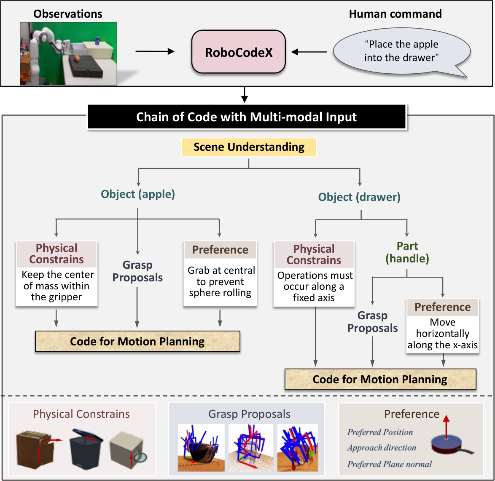

RoboCodeX
代码生成还需要看懂对象怎样运动；多模态推理要落实为抓取偏好和操作约束。
RoboCodeX: Multimodal Code Generation for Robotic Behavior Synthesis
仿真表 1：抓放 80% 对 GPT-4V 的 63%，开门 74% 对 52%，多阶段任务 64% 对 50%。
01这篇要解决什么？
“打开门”和“拉开抽屉”都可以写成一个函数，但它们的运动轴、可抓部位和碰撞约束不同。RoboCodeX 将多模态理解与树状代码生成结合，同时通过专门数据训练模型，让它更擅长把对象语义转化成可执行约束。
02先看一个场景
指令是“把香蕉放进抽屉”。抽屉得先拉开，而拉开的方式取决于它是平移关节还是转轴门；香蕉怎么抓，又取决于它的形状与桌面朝向。这些都不是从指令文本里能读出来的，必须从图像里看出物体会怎么动。
03方法怎样运转？

- 01
先训一个自己的多模态代码模型
RoboCodeX-13B 沿用 BLIP-2 结构：视觉编码器是 EVA-CLIP 的 ViT-G/14（去掉最后一层、改用倒数第二层输出，训练时冻结并转成 FP16），中间用 Q-Former 把视觉 token 压短以容纳很长的 API 文档提示，语言侧是 LLaMA-13B。另加一个视觉适配器：把视觉编码器的隐层按比例分成四段，各取末层的 class token 拼接，经一个通道注意力网络（降维—SiLU—升维）后与其余视觉 token 一起输入。这一层是作者自己设计并训练的，与直接提示 GPT-4V 不是同类系统。
- 02
训练数据由大模型在仿真里自动产出
预训练数据是程序化生成的：从 HM3D 采样家居场景，往合理位置插入 Google Scanned、YCB、OmniObject3D 与 AKB-48 的物体，把场景写成文字交给 GPT-4 生成任务描述与对应代码，每个任务采 10 份、由 GPT-3.5 评分并滤掉语法错误。SFT 阶段以 RT-1 与 LIBERO 的任务类型为基础，对语法正确但执行失败的代码穷举可选设置（中心提举还是 AnyGrasp、偏好接触位置、夹爪方向、轨迹生成方式），把最优项作为标签，再让 GPT-4V 解释为什么它更好并写成注释充当思维链标签。两个阶段都掺入 ShareGPT4V 等通用视觉语言数据以防过拟合。
- 03
树状分解：把指令拆成以物体为中心的单元
观测是三个视角的 RGBD，深度融合成截断符号距离场（TSDF）表示环境结构。模型读这三张 RGB 加指令，输出若干个 object-centric 单元及每个单元的操作偏好 pf——接近方向或偏好接触位置，例如球形物体从中心抓更稳，杯子这类开口容器抓边缘更灵活。这一层只决定「用什么姿态对待这个物体」，不直接给坐标。
- 04
每个单元向下展开成四类可以算出来的量
部件级 affordance 给出任务相关部件的点云分割，例如抽屉把手区域；抓取位姿由现成的 AnyGrasp 生成带分数的候选，取前 10 个，再用推理出的偏好选定一个；物体物理属性由现成的 GAMMA（基于 PointNet++，做部件分割与关节轴回归）从点云估出关节信息；平面与法向量则把 Open3D 的平面检测封装成 API 供代码调用。四类结果最后被编译成结构化的可执行代码。
- 05
轨迹与跨平台执行
轨迹规划用零阶优化：随机采样轨迹，按控制代价与占据栅格约束打分选优，输出是稠密的末端路点序列（每个路点含 6-DoF 位姿、速度与夹爪动作）。执行侧是 ROS 环境里的 MoveIt 与 OMPL 做运动规划，再由操作空间控制器跟踪。换机器人时只改配置文件，论文据此在 Franka Emika Panda 与 UR5 上做了零样本展示。
I = 三视角 RGBD; tsdf, occupancy = fuse(I) # 融出 3D 结构与占据栅格
units, prefs = RoboCodeX(RGB×3, instruction) # 自训 13B 模型：树状分解 + 操作偏好
for u, pf in zip(units, prefs):
O = 点云(u) # 多视角 2D 框按深度对齐后取物体点云
A = affordance(O, u) # 部件级分割，如把手区域
pc = top10(AnyGrasp(A)); g = 按 pf 选一个 # 现成抓取检测器给候选，偏好定取舍
phi = GAMMA(O) # 现成模型：关节类型与轴向
n = open3d_plane_normal(O) # 封装成 API 的平面检测
code = 写出调用序列(g, phi, n, pf)
tau = 零阶优化(采样轨迹, 控制代价, occupancy) # 采样—打分—选优，出稠密路点
execute(tau) # ROS 运动规划 + 操作空间控制器方法与结果的原文定位见本页引用。
04跟着这个场景走一遍
教学推演：回到上面的场景。第一步要先记住读图的是谁：不是被提示的通用大模型，而是作者自己训练过的 RoboCodeX-13B（EVA-CLIP ViT-G/14 加 Q-Former 加 LLaMA-13B，另有一个聚合四段隐层 class token 的视觉适配器）。第二步，它之所以知道抽屉该怎么开，来自那套自动生成的数据——同类任务在仿真里被穷举过「中心提举还是 AnyGrasp」「沿关节轴拉还是只给终点」这些选项，成功的那一项连同 GPT-4V 写的理由一起成了训练标签。第三步，三个视角的 RGBD 融成 TSDF，模型把任务拆成抽屉单元与香蕉单元，并分别给出偏好：抽屉要求夹爪对齐棱柱关节轴，香蕉要求夹爪对齐桌面法向、靠近物体中心。第四步，抽屉单元向下展开：把手区域由部件级分割给出，抓取候选由 AnyGrasp 生成前 10 个再按偏好挑一个，「这是平移关节、轴向朝外」由 GAMMA 从点云估计，桌面法向由 Open3D 的平面检测 API 返回。第五步，这些量被写进代码，轨迹由零阶优化在占据栅格约束下随机采样评分得到，交给 ROS 侧的运动规划与操作空间控制器执行。如果把抽屉当成绕轴旋转的门，生成的代码语法一样正确、执行照样失败——所以读这篇时要追踪的是视觉信息究竟改变了哪一个运动参数，而不是代码写得好不好看。
05实验到底表现怎样？
主要操作比较在仿真中进行，表 1 报告每类任务 50 次试验的平均成功率；还包含导航基准、一般 VQA 与真实 Franka 展示。不同任务的指标应分开理解。
作者报告的实验结果 · v1
| 表 1 任务 | GPT-4V | RoboCodeX |
|---|---|---|
| 抓取放置 | 63% | 80% |
| 抽屉操作 | 68% | 84% |
| 门操作 | 52% | 74% |
| 把物体放入抽屉 | 55% | 68% |
| 多阶段任务 | 50% | 64% |
原始证据：树状生成与训练：§3 ↗ · 量化操作实验：§4.1 / 表 1 ↗ · 实机展示与消融：§4.4–4.5 ↗
提高并不均匀：门操作提升 22 个百分点，多阶段提升 14 个百分点。结果支持专门的多模态操作建模，但不意味着所有物理步骤都已可靠；多阶段成功率仍只有 64%。
06收益来自哪里，又停在哪里？
消融与机制证据
§4.5 / 图 5 分别研究操作偏好、视觉适配器和一般 VQA 数据。阅读这些消融时应区分“视觉信息更好”“模型经过专门训练”和“代码组织更好”，三者不是同一项改进。
结论的适用边界
模型来源是混合的：作者自己训练的只有 RoboCodeX 这一个 13B 多模态模型（视觉编码器 EVA-CLIP ViT-G/14 冻结，Q-Former 与 LLaMA-13B 参与训练），而它的训练数据又主要由 GPT-4 与 GPT-4V 在程序化生成的仿真场景里产出；抓取候选来自现成的 AnyGrasp，关节参数来自现成的 GAMMA，平面检测来自 Open3D，运动规划与控制来自 ROS 侧的成熟模块。因此与直接提示 GPT-4V 的比较里同时混着「模型被专门训练过」和「接了一整套几何工具」两种差异，不能据此得出树状分解单独贡献了全部提升。主要操作比较也在仿真中进行，真实 Franka 与 UR5 上只做了跨平台展示。
07放回全书的脉络
与 CaP 共同看“程序由谁写、几何由谁算”；与 ReKep 共同看“约束如何表示”。与 CaP-X 比较时还要对齐感知接口与低层原语。
08把阅读变成一个小研究
在仿真中保留同一规划器，只替换门 / 抽屉轴向信息为真值、视觉估计和错误估计，观察行为差异。
先自己回答：这项实验怎样才有解释力？
如果轴向误差主导失败，就优先研究感知约束与不确定性处理；仅加长语言推理可能无效。按定位、约束、规划和执行四阶段归因。
- 用自己的话说出这篇改变了哪个模块。
- 画出它的输入、输出和一次失败如何被处理。
- 复述一个结果，同时说清基线、指标与实验条件。这一问不给答案，材料在第 05 节。
先自己答，再看前两问的参考答案
这篇改了哪个模块改的是从图像到运动参数这条链上的中间表示，同时也换了做这件事的模型。指令被拆成以物体为中心的代码单元，每个单元附一个操作偏好（接近方向或偏好接触位置），再向下展开成部件级 affordance、抓取位姿、关节类型与轴向、平面法向量这些可以算出来的量，最后编译成结构化的可执行代码。与 ReKep 的对照点正在模型来源上：那边全部用现成件，这边作者训练了自己的多模态模型 RoboCodeX-13B（EVA-CLIP ViT-G/14 加 Q-Former 加 LLaMA-13B，另有一个视觉适配器）；但抓取候选、关节参数、平面检测、运动规划与控制器一概没有改，分别来自 AnyGrasp、GAMMA、Open3D 与 ROS 侧的成熟模块。
输入、输出与一次失败如何被处理输入是三个视角的 RGBD 与一句指令，其中模型真正读到的只有三张 RGB 加指令，深度融成 TSDF 与占据栅格、物体点云按深度对齐后取出，这些都由外部系统完成，不经过模型。输出是若干 object-centric 单元连同各自的操作偏好，向下展开成一段结构化代码：代码里调 AnyGrasp 取前 10 个抓取候选再按偏好选定一个，调 GAMMA 估关节类型与轴向，调封装成 API 的 Open3D 平面检测取法向量；随后轨迹由零阶优化在控制代价与占据栅格约束下采样评分得到稠密路点，交给 ROS 侧的 MoveIt 与 OMPL，再由操作空间控制器跟踪。失败处理这一条是缺的：执行前只有轨迹层面的约束筛选，占据栅格会挡掉会碰撞的采样，但执行之后既没有成功检测，也没有重新感知或重写代码的通路。所以把平移关节的抽屉当成绕轴旋转的门时，生成的代码语法正确、程序照样跑完，问题只留在最终结果里——论文的误差分析也把长程任务的主要错误归到抓取位姿选择与轨迹规划失败，而不是某个运行时检测器报了警。
代码生成还需要看懂对象怎样运动；多模态推理要落实为抓取偏好和操作约束。
↗带着位置回到原文
首发日期用于时间排序；以下方法与结果对应 v1。数据为论文作者报告，本讲义没有独立复现实验。
QA就这一页提问或讨论
对某个数字、某条边界或某个推演有疑问，欢迎直接留言：讨论按页面分开，回复会保留在 XinrunXu/awesome-agentic-robotics-papers 的 Discussions 里，需要一个 GitHub 账号。